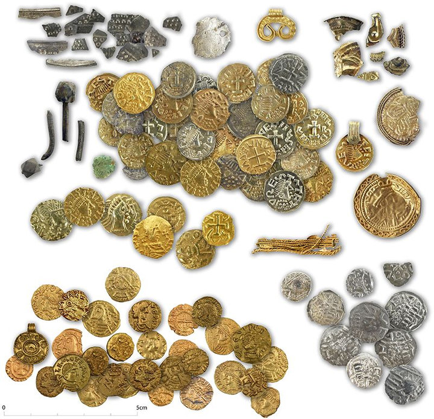

Muntschat van Hezingen.
In het Springendal bij Hezingen is een bijzondere schat gevonden uit de 6de en 7de eeuw na Christus. De vondst bestaat uit ruim honderd gouden munten, enkele zilveren munten en sieraden. Ze dateren uit de Merovingische tijd, de vroege middeleeuwen. De voorwerpen lagen bij houten palen op een kruispunt van oude wegen. Op deze plek zijn gedurende ongeveer een eeuw waardevolle bezittingen achtergelaten. Daarom zien archeologen dit als een offerplaats. Het gaat niet om een verborgen geldvoorraad. De munten en sieraden zijn bewust gegeven als geschenk aan hogere machten. Deze goed onderzochte vindplaats is een van de belangrijkste vroegmiddeleeuwse ontdekkingen van Nederland.